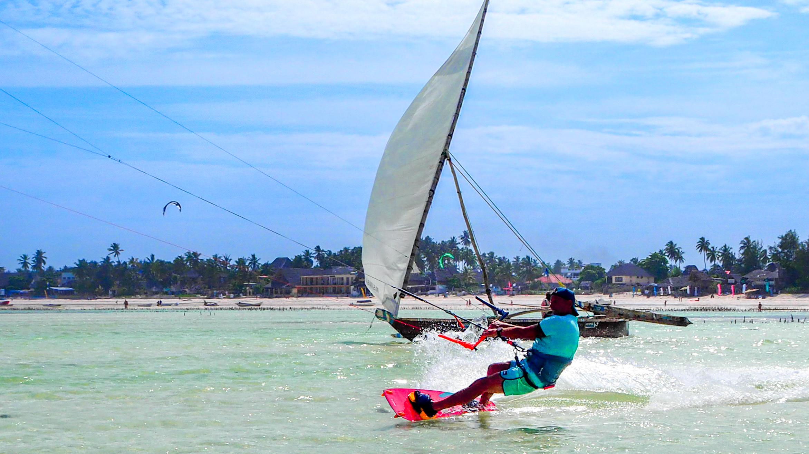

Location: Southeastern coast of Zanzibar
Vibe: Laid-back, scenic, vibrant mix of relaxation and activity
Main Attractions: Kitesurfing, relaxing beach spots, diverse food, friendly community
Vibe: Laid-back, scenic, vibrant mix of relaxation and activity
Main Attractions: Kitesurfing, relaxing beach spots, diverse food, friendly community
Ideal Conditions: Consistent trade winds, shallow lagoon, spacious beach Skill Levels: Beginner to advanced, with several kite schools available. Equipment & Lessons: Rental and lessons offered at many beach spots
Relax at beach bars, on a hammock, or bean bags while enjoying the view. Drinks: Fresh coconut water, cocktails, and smoothies. Scenic Views: Palm trees, turquoise waters, and powdery white sand